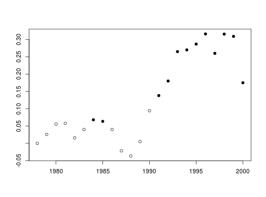

Calculates the Seasonal Kendall test of significance, including an estimate of the Sen slope, for rolling windows over a time series.
seaRoll(x, w = 10, plot = FALSE, pval = 0.05, mval = 0.5, pchs = c(19, 21), xlab = NULL, ylab = NULL, ...)
| x | A seasonal time series vector. |
|---|---|
| w | The window width for “rolling” estimates of slope. |
| plot | Indicates if a plot should be drawn |
| pval | p-value for significance |
| mval | Minimum fraction of seasons needed with non-missing slope estimates |
| pchs | Plot symbols for significant and not significant trend estimates, respectively |
| xlab | Optional label for x-axis |
| ylab | Optional label for y-axis |
| ... | Other arguments to pass to plotting function |
seaRoll returns a matrix with one row per time window
containing the Sen slope, the relative Sen slope, and the p-value.
Rows are labelled with the leading year of the window.
The function seaRoll applies seaKen to rolling time windows of
width w. A minimum w of five years is required. For any
window, a season is considered missing if half or more of the possible
comparisons between the first and last 20% of the years is missing. If
mval or more of the seasons are missing, then that windowed trend is
considered to be missing.
If plot = TRUE, a point plot will be drawn with the Sen slope plotted
at the leading year of the trend window. The plot symbols indicate,
respectively, that the trend is significant or not significant. The plot can
be customized by passing any arguments used by plot.default,
as well as graphical parameters described in par.
chl27 <- sfbayChla[, 's27'] seaRoll(chl27)#> sen.slope sen.slope.rel p.value #> 1978 0.00000000 0.000000000 1.000000e+00 #> 1979 0.02583333 0.016666667 3.568946e-01 #> 1980 0.05555556 0.026240809 8.423384e-02 #> 1981 0.05776786 0.025617258 2.267009e-01 #> 1982 0.01600000 0.009969325 6.251578e-01 #> 1983 0.04000000 0.021052632 7.845420e-02 #> 1984 0.06800000 0.027777778 4.973298e-02 #> 1985 0.06347222 0.027681992 3.808146e-02 #> 1986 0.04000000 0.019295047 1.255508e-01 #> 1987 -0.02166667 -0.008978819 5.248005e-01 #> 1988 -0.03642857 -0.015035413 3.054480e-01 #> 1989 0.00500000 0.001312336 9.744385e-01 #> 1990 0.09428571 0.036047681 1.088968e-01 #> 1991 0.13800000 0.053256303 5.650545e-03 #> 1992 0.18000000 0.068702290 8.592198e-05 #> 1993 0.26500000 0.117241379 7.397553e-06 #> 1994 0.27000000 0.114394332 1.948646e-06 #> 1995 0.28666667 0.120610687 7.090807e-06 #> 1996 0.31600000 0.118891320 3.829067e-07 #> 1997 0.26000000 0.078260870 3.069881e-04 #> 1998 0.31550000 0.089193677 9.162416e-05 #> 1999 0.30900000 0.078921416 2.609064e-05 #> 2000 0.17500000 0.043028611 1.807407e-02seaRoll(chl27, plot = TRUE)